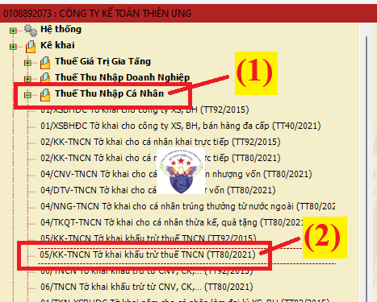
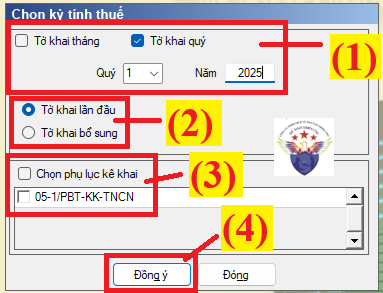
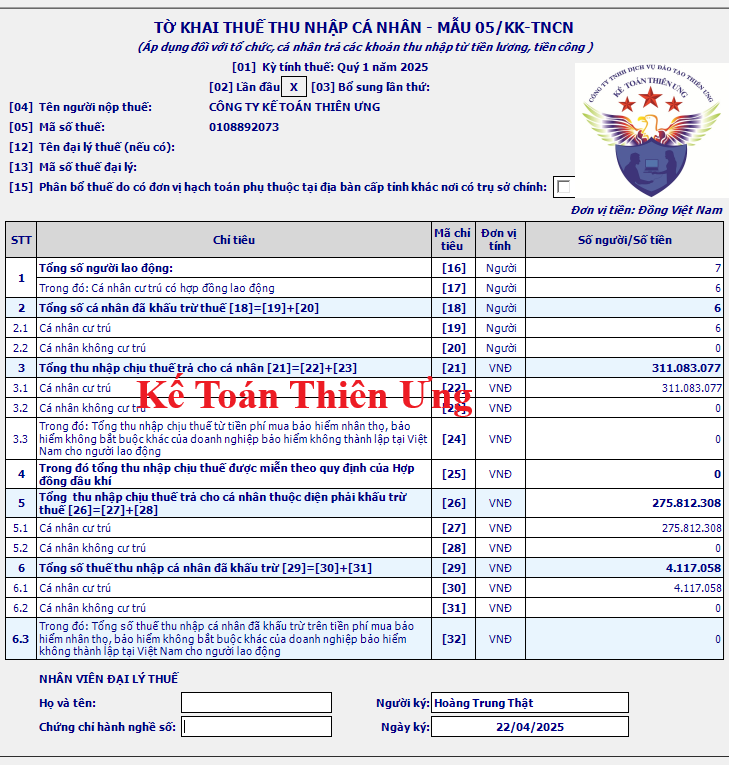
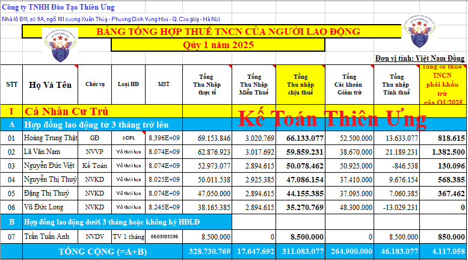
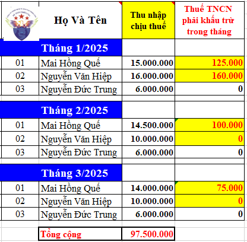

Hướng dẫn cách làm tờ khai thuế thu nhập cá nhân theo tháng hoặc theo quý bằng mẫu 05/KK-TNCN được ban hành kèm theo thông tư 80/2021/TT-BTC trên phần mềm HTKK
Bước 1: Đăng nhập vào phần mềm HTKK 
Mở phần mềm HTKK => Đăng nhập Mã số thuế của doanh nghiệp muốn kê khai vào phần mềm => Nhập/Lựa chọn xong MST thì ấn “Đồng ý”
Bước 2: Lựa chọn tờ khai

(1) Vào mục "Thuế Thu Nhập Cá Nhân"
(2) Bấm chọn "05/KK-TNCN Tờ khai khấu trừ thuế TNCN (TT80/2021)
(Đây là tờ khai thuế TNCN: Áp dụng đối với tổ chức, cá nhân trả các khoản thu nhập từ tiền lương, tiền công)
(Dù công ty bạn có kê khai thuế TNCN theo tháng hay theo quý thì cũng dùng chung mẫu này)
Bước 3: Chọn kỳ tính thuế:
Sau khi các bạn bấm vào dòng "05/KK-TNCN Tờ khai khấu trừ thuế TNCN (TT80/2021) thì phần mềm HTKK sẽ hiện thị ra bảng chọn kỳ tính thuế như sau:

Tại đây các bạn lần lượt lựa chọn các thông tin như sau:
(1) Chọn kỳ kê khai: theo tháng hoặc theo quý
Thuế TNCN là loại thuế kê khai theo tháng hoặc theo quý và quyết toán theo năm
+ Đối với những doanh nghiệp thuộc đối tượng kê khai thuế TNCN theo tháng thì tích chọn vào ô "Tờ khai tháng" rồi chọn tháng/năm cần kê khai
+ Còn đối với những doanh nghiệp thuộc đối tượng kê khai thuế TNCN theo quý thì tích chọn vào ô "Tờ khai quý" rồi chọn quý/năm cần kê khai
Cách xác định kỳ kê khai thuế TNCN theo tháng hoặc theo quý thực hiện theo quy định tại điều 8 và điều 9 của Nghị định 126/2020/NĐ-CP như sau:
+ Kê khai thuế TNCN theo tháng: Dành cho những doanh nghiệp có tổng doanh thu bán hàng hóa và cung cấp dịch vụ của năm trước liền kề trên 50 tỷ đồng (tức là những doanh nghiệp thuộc đối tượng kê khai thuế GTGT theo tháng thì cũng kê khai thuế TNCN theo tháng)
(Trong đó: Doanh thu bán hàng hóa, cung cấp dịch vụ được xác định là tổng doanh thu trên các tờ khai thuế GTGT của các kỳ tính thuế trong năm dương lịch)
Chi tiết thì các bạn vui lòng xem tại đây: Cách xác định kỳ kê khai thuế TNCN theo tháng hay quý
+ Tích chọn vào ô “Tờ khai bổ sung” trong trường hợp: Sau khi doanh nghiệp nộp tờ khai lần đầu và đã nhận được Thông báo chấp nhận hồ sơ khai thuế đối với Tờ khai thuế “Lần đầu”
=> Doanh nghiệp tiến hành làm tờ khai điều chỉnh bổ sung cho tờ khai thuế có sai sót đó thì sẽ thực hiện chọn trạng thái tờ khai là “Tờ khai bổ sung” để kê khai điều chỉnh bổ sung cho sai đó
(3) Chọn phụ lục kê khai (Nếu có phát sinh):
Đối tượng áp dụng:
+ Doanh nghiệp có thực hiện khấu trừ thuế TNCN đối với thu nhập từ tiền lương, tiền công được trả tại trụ sở chính cho người lao động làm việc tại đơn vị phụ thuộc, địa điểm kinh doanh tại tỉnh khác.
+ Công ty xổ số điện toán thực hiện khấu trừ đối với thu nhập từ trúng thưởng của cá nhân trúng thưởng xổ số điện toán phân bổ thuế TNCN hàng tháng/quý thực hiện kê khai phần II Phụ lục 05-1/PBT-KK-TNCN.
Vậy là:
+ Nếu doanh nghiệp bạn thuộc đối tượng phải kê khai Phụ lục số 05-1/PBT-KK-TNCN thì các bạn tích chọn vào dòng phụ lục "05-1/PBT-KK-TNCN"
+ Còn nếu doanh nghiệp bạn không thuộc đối tượng phải kê khai Phụ lục số 05-1/PBT-KK-TNCN thì các bạn không tích chọn vào dòng phụ lục "05-1/PBT-KK-TNCN"
Bước 4: Làm tờ khai thuế TNCN mẫu 05/KK-TNCN

+ Nếu doanh nghiệp kê khai thuế TNCN theo tháng: Căn cứ vào "Bảng tính thuế TNCN theo tháng" của tháng cần kê khai để lấy thông tin đưa vào tờ khai thuế TNCN của tháng đó
Mẫu bảng tính thuế TNCN trên Excel 2025 cho doanh nghiệp

Lưu ý như sau: Vì thời điểm tính thuế TNCN là thời điểm chi trả thu nhập
Cách làm từng chỉ tiêu trên tờ khai thuế TNCN mẫu 05/KK-TNCN theo thông tư 80/2021 như sau:
- Chỉ tiêu 16: Tổng số người lao động
Là tổng số cá nhân có thu nhập từ tiền lương, tiền công mà doanh nghiệp đã trả lương trong kỳ (tháng/quý) kê khai
(Không phân biệt NLĐ đó có bị khấu thuế TNCN hay không, không phân biệt ký loại hợp đồng gì, không phân biệt cá nhân đó có cư trú hay không cư trú, không phân biệt có nhân đó đã nghỉ việc rồi hay còn làm tại doanh nghiệp => Cứ NLĐ đó được trả lương trong kỳ thì tổng hợp vào đây)
Ví dụ: Qúy 1/2025, Công ty Kế Toán Diệu Tâm có phát sinh số lượng lao động như sau:
- Chỉ tiêu 17: Kê khai số NLĐ là cá nhân cư trú ký HĐLĐ từ 3 tháng trở lên
- Chỉ tiêu 18: Kê khai số NLĐ là cá nhân đã bị khấu trừ thuế: 18 = 19 + 20 (Phần mềm HTKK tự tổng hợp)
- Chỉ tiêu 19: Kê khai số NLĐ là cá nhân cư trú đã bị khấu trừ
Là số cá nhân cư trú có thu nhập từ tiền lương, tiền công mà tổ chức, cá nhân trả thu nhập đã khấu trừ thuế.
Chỉ tiêu này cần chú ý tới: Người lao động đó có bị khấu trừ thuế TNCN hay không: Nếu NLĐ đó có bị khấu trừ thuế TNCN (tức là có bị trừ tiền thuế TNCN vào lương, có phải nộp thuế TNCN đó ạ) thì đưa NLĐ đó vào chỉ tiêu 19 này. Còn nếu NLĐ mà không bị khấu trừ tiền thuế TNCN thì không đưa NLĐ đó vào chỉ tiêu 19 này
- Chỉ tiêu 20: Kê khai số NLĐ là cá nhân không cư trú đã bị khấu trừ thuế
Là số cá nhân không cư trú có thu nhập từ tiền lương, tiền công mà tổ chức, cá nhân trả thu nhập đã khấu trừ thuế.
Xem thêm: Cách xác định cá nhân cư trú và không cư trú
- Chỉ tiêu 21: Kê khai số Thu nhập chịu thuế đã trả cho cá nhân trong kỳ: 21 = 22 + 23 (Phần mềm HTKK tự tổng hợp)
- Chỉ tiêu 22: Kê khai số thu nhập chịu thuế đã trả cho cá nhân cư trú:
Thu nhập chịu thuế = Tổng lương nhận được - Các khoản thu nhập được miễn thuế TNCN
Trong đó:
Lưu ý: Đối với các công ty kê khai thuế TNCN theo quý thì Thu nhập chịu thuế của quý sẽ bằng thu nhập chịu thuế của 3 tháng trong quý cộng lại (Mỗi tháng DN sẽ làm 1 bảng tính thuế TNCN rồi đến khi làm tờ khai quý thì làm bảng tổng hợp quý để cộng số liệu của 3 tháng trong quý đó lại rồi đưa lên tờ khai quý)
- Chỉ tiêu 23: Kê khai số thu nhập chịu thuế đã trả cho cá nhân không cư trú
- Chỉ tiêu 24: Trong đó: Tổng thu nhập chịu thuế từ tiền phí mua bảo hiểm nhân thọ, bảo hiểm không bắt buộc khác của doanh nghiệp bảo hiểm không thành lập tại Việt Nam cho người lao động
Là khoản tiền mà tổ chức, cá nhân trả thu nhập mua bảo hiểm nhân thọ, bảo hiểm không bắt buộc khác có tích lũy về phí bảo hiểm của doanh nghiệp bảo hiểm không thành lập tại Việt Nam cho người lao động.
- Chỉ tiêu 25: Trong đó tổng thu nhập chịu thuế được miễn theo quy định của Hợp đồng dầu khí
Là tổng số thu nhập chịu thuế được miễn theo quy định của Hợp đồng dầu khí (nếu có)
- Chỉ tiêu 26: Kê khai số thu nhập chịu thuế của các cá nhân đã bị khấu trừ thuế: 26 = 27 + 28 (Phần mềm HTKK tự tổng hợp)
- Chỉ tiêu 27: Cá nhân cư trú: Kê khai thu nhập chịu thuế của cá nhân cư trú đã bị khấu khấu trừ thuế:
Lưu ý: Chỉ đưa số thu nhập chịu thuế của những nhân viên đã bị khấu trừ tiền tiền thuế TNCN vào chỉ tiêu 27 này thôi. Còn những người lao động không bị khấu trừ tiền thuế TNCN (không bị trừ thuế TNCN vào lương) không đưa thu nhập của họ vào chỉ tiêu 27 này
Phân biệt chỉ tiêu 22 và chỉ tiêu 27 trên tờ khai 05/KK-TNCN như sau:
Ví dụ: Trong quý 1 năm 2025, công ty Bảo An có trả lương cho 3 nhân viên như sau:

Tại chỉ tiêu số 22 sẽ kê khai toàn bộ thu nhập chịu thuế của cả 3 người lao động trong quý 1/2025 mà không cần phải phân biệt người lao động đó có bị khấu trừ thuế TNCN hay không => Chi tiêu 22 = 97.500.000đ
Còn đối với chỉ tiêu 27 thì sẽ không cộng thu nhập chịu thuế của những người không bị khấu trừ thuế TNCN vào (trong quý 1 có Nguyễn Đức Trung không bị khấu trừ thuế TNCN nên sẽ không đưa thu nhập chịu thuế của Nguyễn Đức Trung vào chỉ tiêu 27) mà chỉ đưa thu nhập chịu thuế của 2 người đã bị khấu trừ thuế TNCN là Quế và Hiệp vào chỉ tiêu 27 thôi => Chi tiêu 27 = 79.500.000đ
- Chỉ tiêu 28: Cá nhân không cư trú: Kê khai thu nhập chịu thuế trả cho cá nhân không cư trú đã bị khấu trừ thuế
Lưu ý: Đối với chỉ tiêu 26, 27 và 28
Nếu trong quý, NLĐ có tháng bị khấu trừ thuế và cũng có tháng không bị khấu trừ thuế TNCN thì số liệu về thu nhập chịu thuế để đưa vào chỉ tiêu 26/27/28 vẫn là tổng thu nhập chịu thuế của cả 3 tháng của cá nhân đó (tức là bao gồm thu nhập chịu thuế của cả những tháng mà NLĐ đó không bị khấu trừ thuế TNCN)
- Chỉ tiêu 29: Kê khai số thuế TNCN đã khấu trừ: 29 = 30 + 31 (Phần mềm HTKK tự tổng hợp)
- Chỉ tiêu 30: Kê khai tổng số thuế TNCN đã khấu trừ của cá nhân cư trú
Là số thuế thu nhập cá nhân mà tổ chức, cá nhân trả thu nhập đã khấu trừ của các cá nhân cư trú trong kỳ.
- Chỉ tiêu 31: Kê khai tổng số thuế TNCN đã khấu của cá nhân không cư trú
- Chỉ tiêu [32] Tổng số thuế TNCN đã khấu trừ trên tiền phí mua bảo hiểm nhân thọ, bảo hiểm không bắt buộc khác của doanh nghiệp bảo hiểm không thành lập tại Việt Nam cho người lao động: Là tổng số thuế thu nhập cá nhân mà tổ chức, cá nhân trả thu nhập đã khấu trừ trên khoản tiền phí mua bảo hiểm nhân thọ, bảo hiểm không bắt buộc khác có tích lũy về phí bảo hiểm của doanh nghiệp bảo hiểm không thành lập tại Việt Nam cho người lao động.
Phần mềm HTKK tự động tính Chỉ tiêu [32] = [24] x 10%.
=> Sau khi làm xong tờ khai thì ấn “Ghi” để kiểm tra tính hợp lệ
+ Nếu sau khi ấn “Ghi” tờ khai hiện thị ra thông báo “Thông tin kê khai sai có ghi lại không” thì ấn “Có” rồi tìm đến lỗi sai điều chỉnh lại cho đúng => Rồi kết xuất
+ Nếu sau khi ấn “Ghi” tờ khai hiện thị ra thông báo “Đã ghi dữ liệu thành công” thì tiến hành kết xuất tờ khai dạng “XML” để nộp qua mạng
* Xác định nghĩa vụ nộp tờ khai và tiền thuế:
- Hạn nộp tờ khai:
+ Theo tháng: chậm nhất là ngày 20 của tháng sau
+ Theo quý chậm nhất là ngày cuối cùng của tháng đầu quý sau
Kỳ kê khai quý 1/2025: hạn nộp tờ khai chậm nhất là ngày 30/04/2025 nhưng do ngày 30/04 là ngày nghỉ nên được chuyển sang ngày làm việc tiếp theo
Theo quy định tại Điều 86 của thông tư 80/2021/TT-BTC về Thời hạn nộp hồ sơ khai thuế và thời hạn nộp thuế thì:
Trường hợp thời hạn nộp hồ sơ khai thuế, thời hạn nộp thuế trùng với ngày nghỉ theo quy định thì thời hạn nộp hồ sơ khai thuế, thời hạn nộp thuế được tính là ngày làm việc tiếp theo của ngày nghỉ đó
Kỳ nghỉ Lễ 30/4 và 1/5 năm 2025: Được nghỉ 05 ngày liên tục từ ngày 30/4/2025 đến hết ngày 04/5/2025 (Theo Thông báo 6150/TB-BLĐTBXH của Bộ Lao động - Thương binh và Xã hội) => Ngày làm tiếp theo là ngày: 05/05/2025
=> Hạn nộp tờ khai thuế TNCN của quý 1/2025: Chậm nhất là ngày 05/05/2025
* Xác định nghĩa vụ nộp thuế:
- Số tiền thuế TNCN phải nộp: chính là số tiền phát sinh tại chỉ tiêu số 29 – Tổng số thuế TNCN đã khấu trừ
- Hạn nộp tiền: giống hạn nộp tờ khai.
----------------------------------------------------------------------------
Để hiểu chi tiết hơn và chuyên sâu hơn các bạn có thể tham gia: Lớp học kế toán thuế thực hành thực tế chuyên sâu.